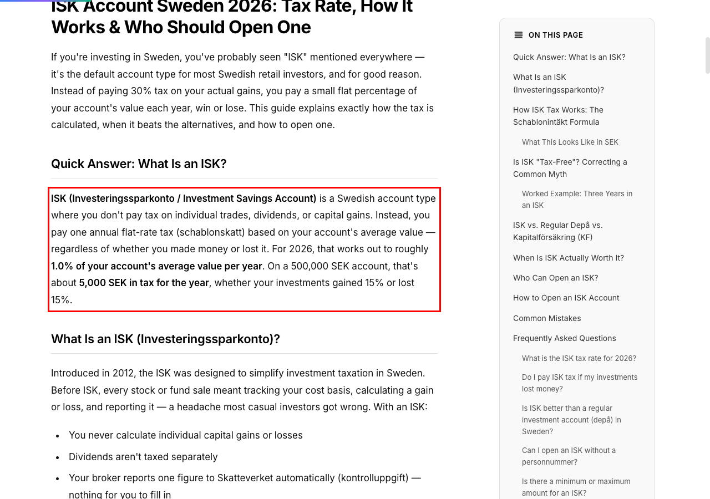
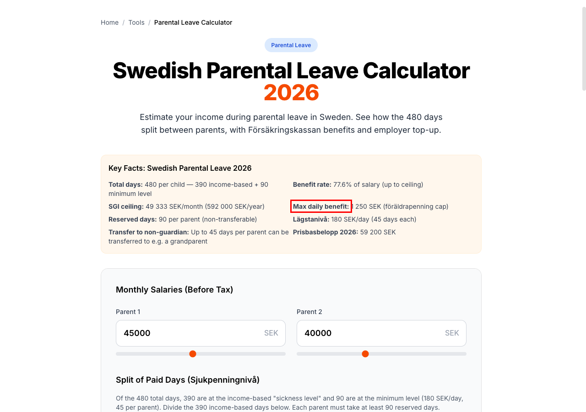
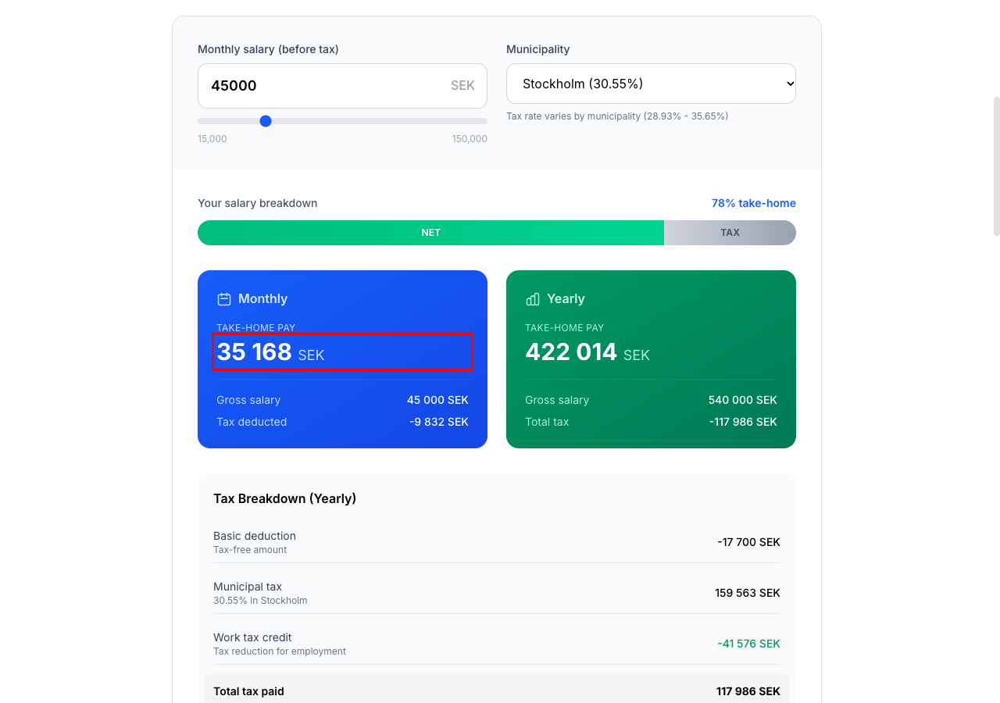
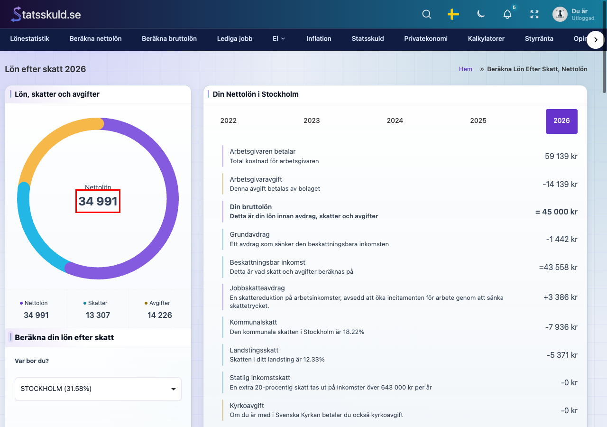
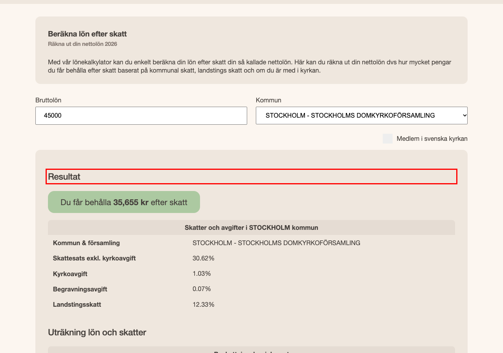
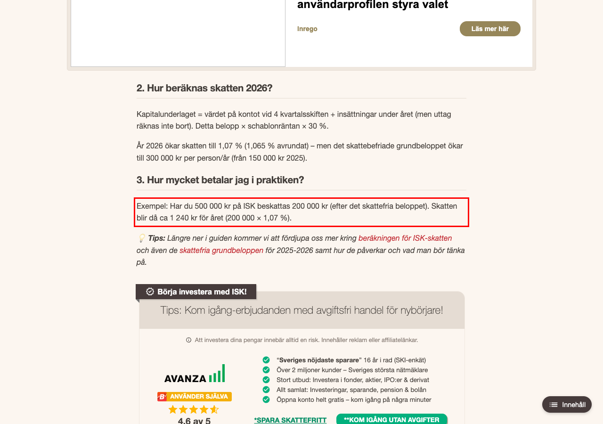
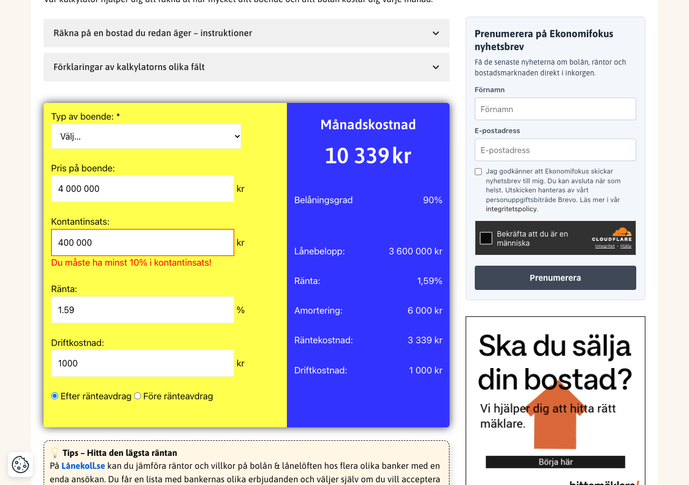
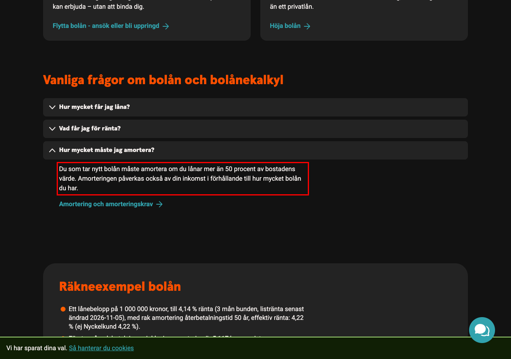
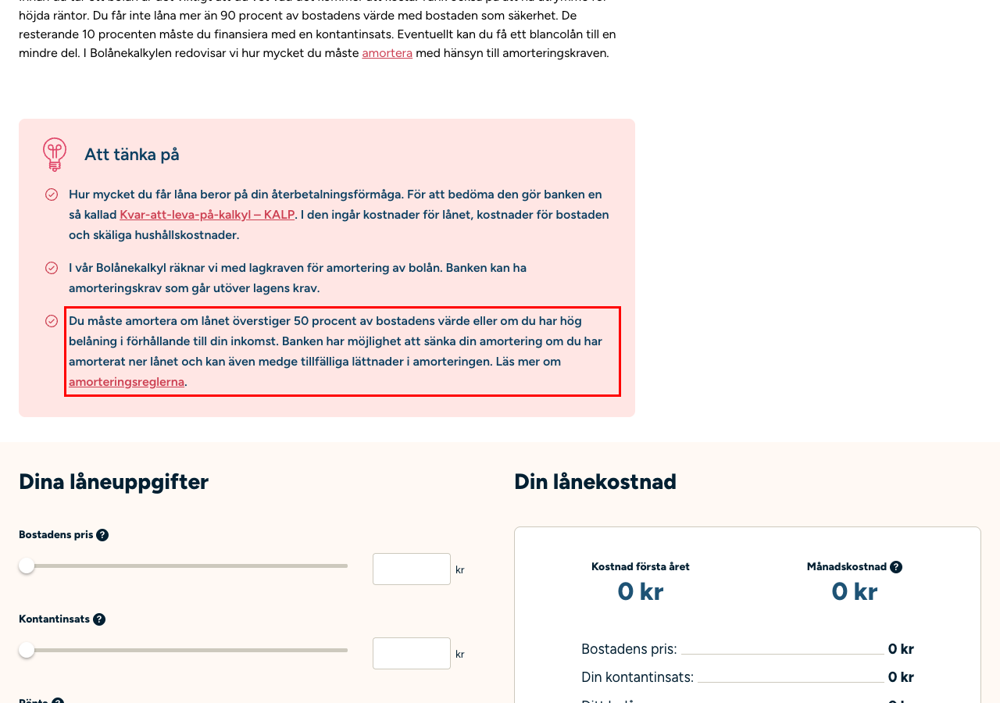

Swedish finance calculators · tested 8 November 2026
I typed the same figures into the Swedish finance calculators people find, checked every answer against the official number, and measured what each page loads before you click anything. My own site is one of them.
Most of us type our salary into whichever calculator comes up first, take the number it gives, and build a budget around it. I build these tools, and I wanted to know how much that number depends on the site you happened to pick.
More than I expected. For the same salary, in the same municipality, the calculators I tested gave five different answers. Two of them are right, for different reasons. The others are off by up to 820 kr a month, which is close to 10 000 kr over a year. That's a holiday, or the buffer you thought you had.
It isn't only the answer. A salary calculator is a page where you type what you earn. Some of these pages contact no other company at all. Others have contacted a dozen or more before you've typed a thing. Not all of these tools are equal, and it's worth knowing which kind you're using.
Born 1990, no church fee, 2026 rules. There are two correct answers. Your payslip uses Skatteverket's monthly tax table, which for Stockholm gives 35 550 kr. The tax you owe for the year comes out a little lower, about 35 810 kr a month, and the difference comes back after your tax return. A good calculator tells you which one it's showing.
Take-home pay shown for the same salary
Each dot is one calculator. The two lines are the official figures.
The same four cases, typed into every Swedish calculator that offers them. Grey means the site has no calculator for that case; it isn't a fail.
Most people don't touch the settings they don't understand. So the municipality a calculator assumes is, for many visitors, the answer. They don't agree.
None of this needs any knowledge of tax. It's what separated the calculators that got it right from the ones that didn't.
Measured in a fresh browser, eight seconds after opening each page, before any consent choice. "Third parties" are other companies' domains the page contacts. It doesn't mean they receive what you type later; it means they know you visited.
Other companies' domains contacted before any click
Swedish sites first, then the British and American benchmarks.
Data transferred in the first eight seconds, empty cache
The red part is what comes from other companies.
A 390 px wide phone; the dashed line is the bottom of the first screen. Green is the first result, blue the first input. Red shading is a cookie banner covering the screen.
Interactive calculators on the site's own domain against a fixed list of 20. Articles and fixed examples don't count.
Each of these was checked by hand on the day, with a screenshot. Sites change, so some may be fixed by the time you read this.
On 500 000 kr: "about 5,000 SEK in tax", with no 300 000 kr tax-free amount and the November 2025 statslåneränta given as 2.33%.
Official: 2 130 kr (300 000 kr tax-free, statslåneränta 2.55%). Article dated 21 July 2026, in English.

The parental leave tool states "Max daily benefit: 1 250 SEK".
Official: 1 259 kr a day (Försäkringskassan, 2026).

For 45 000 kr in Stockholm the calculator shows 35 168 kr; the home page says "~34,500 SEK take-home per month".
Official: 35 550 kr on the payslip, about 35 810 kr on final tax.

45 000 kr in Stockholm, no church fee: 34 991 kr. Stockholm is labelled 31.58%, though the page's own breakdown, 18.22% plus 12.33%, adds up to 30.55%, and it applies a 0.2% burial fee where Stockholm's is 0.07%.
Official: 35 550 kr or about 35 810 kr; Stockholm 30.55% (SCB).

The church fee box is ticked by default, so the first result, 35 206 kr, includes a 449 kr fee. With the box unticked it shows 35 655 kr.
Official: 35 550 kr or about 35 810 kr.

"Skatten blir då ca 1 240 kr för året (200 000 × 1,07 %)". Its own sum gives 2 140 kr.
Official: 2 130 kr.

A 400 000 kr deposit on a 4 000 000 kr home shows "Du måste ha minst 10% i kontantinsats!" in red: the page checks for 15%.
Since 1 April 2026 the minimum deposit is 10% (Lag 2026:226).

"Amorteringen påverkas också av din inkomst i förhållande till hur mycket bolån du har."
The income-based extra amortisation was removed on 1 April 2026 (Lag 2026:226).

On amortisation: "... eller om du har hög belåning i förhållande till din inkomst."
The income-based rule was removed on 1 April 2026 (Lag 2026:226).

Checked by hand between 18:51 and 19:07 on 8 November 2026, with the inputs read back from each page. Three earlier findings were dropped after this check: a broken salary link on one site (it wasn't there), two outdated sentences in years-old comments on another (they were true when written, and the site's own article is correct), and a broken link to a tool (real, but it isn't a wrong figure).
Listentotaxman lets you pick any tax year back to 1999 and compare them side by side.
MoneySavingExpert publishes an editorial code and explains how the site is paid for.
NerdWallet puts a named writer, an editor and an update date on every calculator.
FI Calc lets you save scenarios and has a separate documentation site for its method.
The other way round, the Swedish sites without advertising load far less. No British or American site tested contacted zero third parties, as Velja, Helhetskollen and Handelsbanken did.
Sites tested. Sweden: Avanza (avanza.se), Börskollen, Ekonomifokus, Handelsbanken (handelsbanken.se), Helhetskollen, ISK-guiden, Kalkylverket, MacLaine Finance, Nordnet (nordnet.se), Rika Tillsammans (rikatillsammans.se), SBAB (sbab.se), Smartly, Statsskuld and Velja. Britain and the US: FI Calc, Listentotaxman, MoneySavingExpert (moneysavingexpert.com) and NerdWallet (nerdwallet.com). The exact pages measured are in the data files.
Accuracy. Each calculator was opened in a fresh Chrome profile at phone size. The inputs were typed in by script, read back to check they took, and the result recorded. Official figures: Skatteverket's 2026 tax table 31 (open data) and ISK rules, Försäkringskassan's current amounts, and Lag (2026:226) on mortgage caps and amortisation.
Privacy and weight. The Chrome DevTools protocol, recording every request, host and cookie in the first eight seconds, before any click.
Coverage. Each site's own navigation or tool index, recorded with the URL.
AI. I used Claude (Anthropic). Three models, Claude Opus 5.5, Claude Sonnet 5.5 and Claude Fable 5.1, each wrote an independent review working only from the public web, with the sites listed alphabetically and none named as mine. I used them to cross-check this report and to find sites and claims I'd missed; their scores aren't published, and where they disagreed with the measurements, the measurements are what you see here. A Claude agent ran the measurement scripts. Claude helped me draft the text, and I checked every figure against the data. Every error named in section 8 was checked again by hand.
Limits. One day's snapshot. The network blocked many advertising hosts, so third-party counts are minimums. SBAB and MoneySavingExpert started blocking repeated automated visits, so their figures come from the first visit. Search positions couldn't be measured reliably, so they aren't reported.